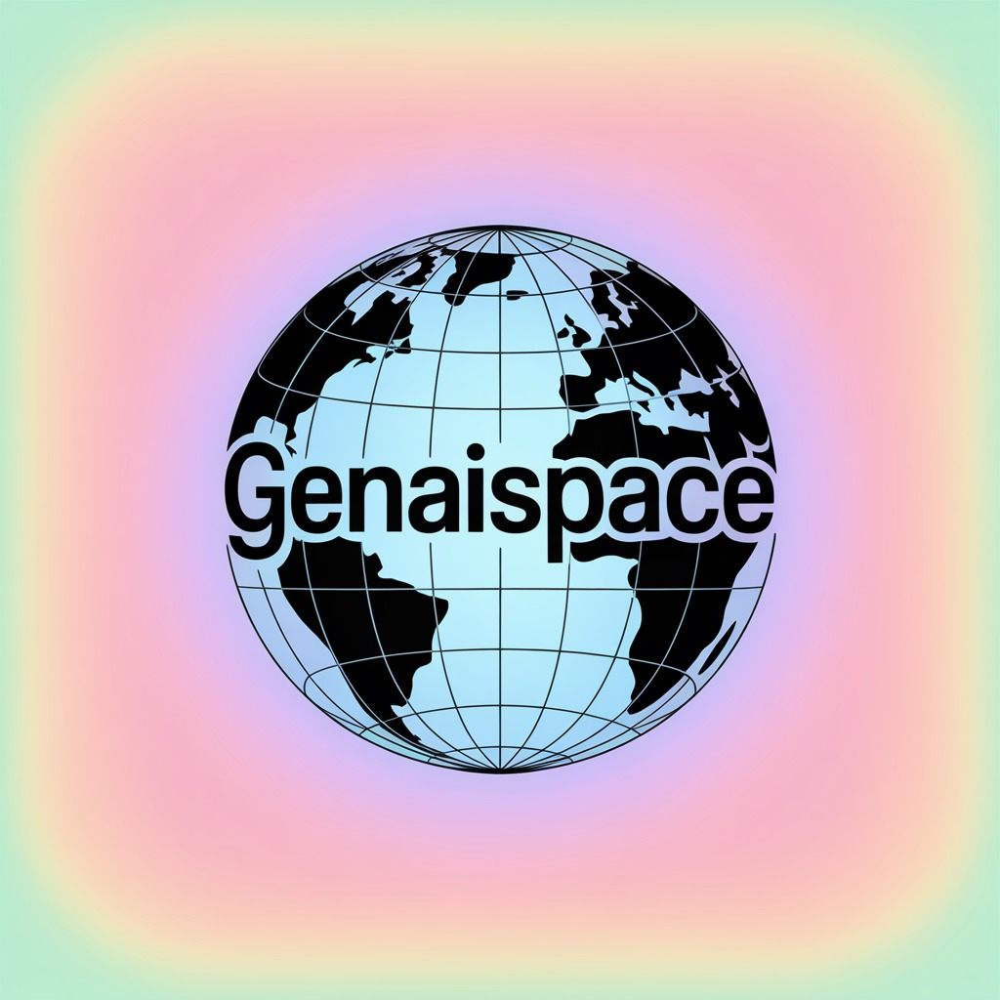

RESEARCH ETHICS · PANEL DISCUSSION
AI เพื่อ
การวิจัย
13 คำถามชวนคิดเรื่องจริยธรรม ความรับผิดชอบ และการใช้ AI ช่วยงานวิจัย
คำถามแต่ละข้อมีคำตอบ เหตุผล และตัวอย่างสำหรับพูดคุยบนเวที

Gen AI SpaceA SPACE TO LEARN AI TOGETHER01 COVER PAGE13 คำถามชวนคิดเรื่องจริยธรรม ความรับผิดชอบ และการใช้ AI ช่วยงานวิจัย
คำถามแต่ละข้อมีคำตอบ เหตุผล และตัวอย่างสำหรับพูดคุยบนเวที